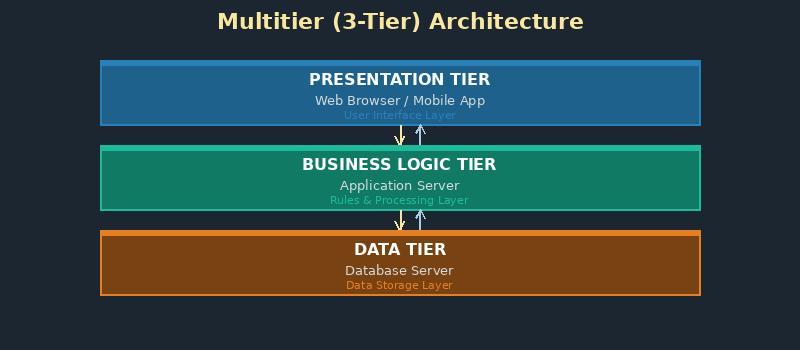

What is Multitier Architecture?

Multitier architecture (also called n-tier architecture) is a design approach that separates an application into logical layers, each with a specific responsibility. These layers often run on different physical servers.
The three main layers are: presentation layer (user interface), business logic layer (processing rules), and data layer (database).
Key facts:
- Separating layers makes applications more scalable and maintainable
- Each tier can be upgraded or scaled independently
- Web applications typically use 3-tier architecture
- Example: Browser (tier 1) → Web server (tier 2) → Database server (tier 3)
Related terms: Web Server, HTTP, Internet